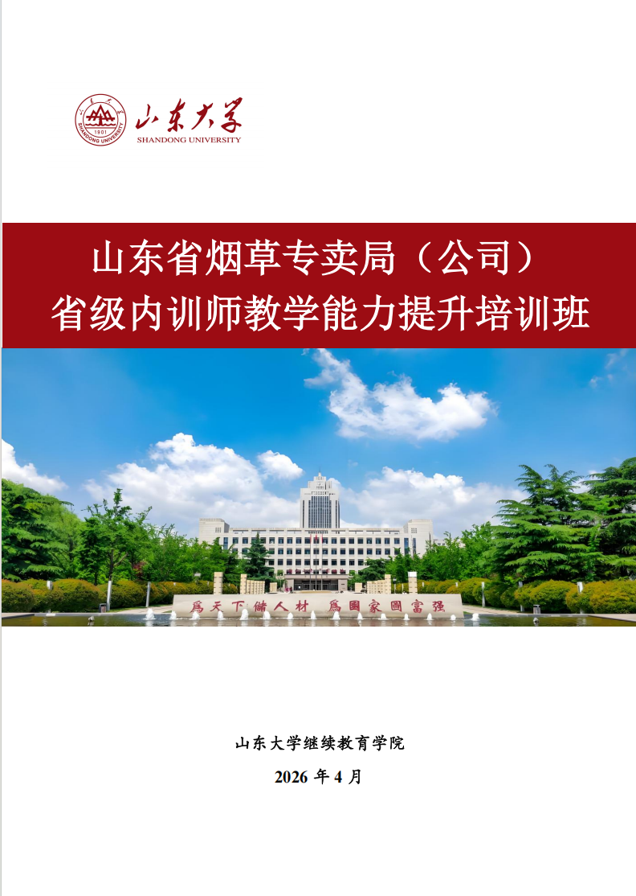
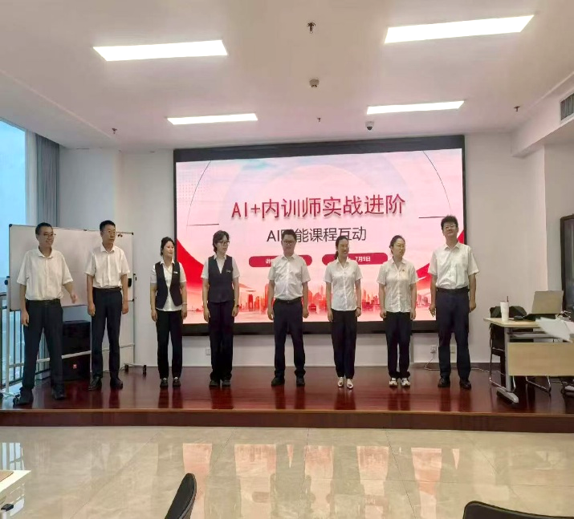
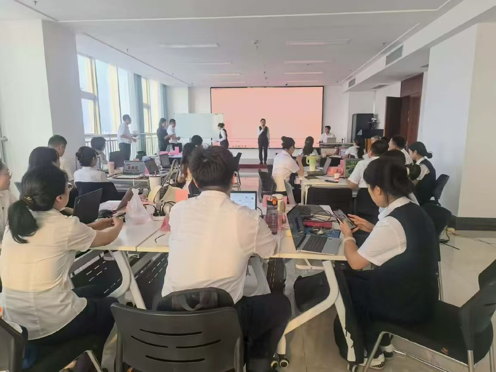
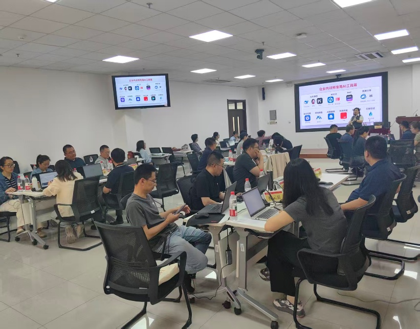
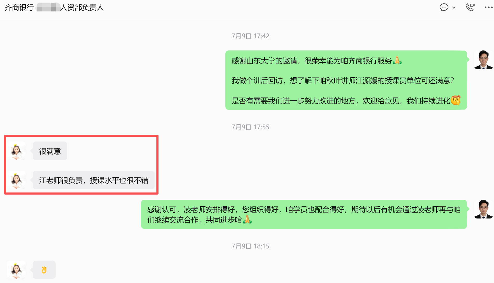

高校合作案例





山东大学继续教育学院、经济学院相继承接山东省烟草专卖局（公司）省级内训师教学能力提升培训、齐商银行内训等重点项目，秋叶团队承担全程教学交付
培训项目
专项服务
口碑效应
题2026年，山东大学继续教育学院、经济学院承接的多个重点培训项目由秋叶团队负责课程交付，围绕"AI+内训师实战进阶"等主题开展教学
合作内容延伸至青教赛、教创赛PPT定制等赛事支持服务
以山东大学合作为示范，济宁学院等高校相继引入同类培训合作